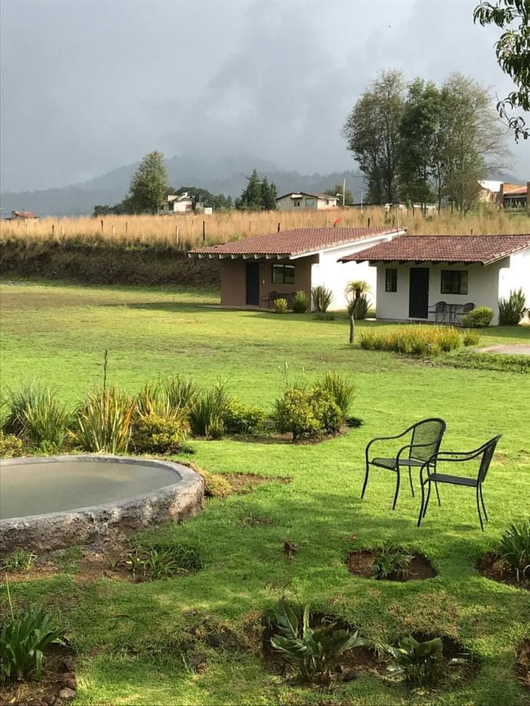
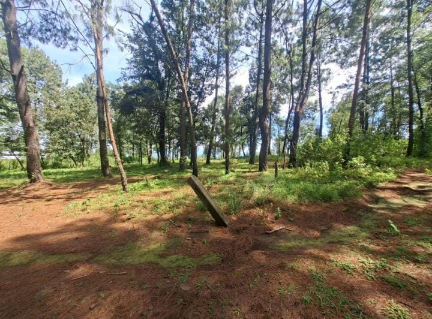

El Fresno es una paqueña comunidad rural, que se ubica en la zona serrana del municipio, dentro de una región montañosa y boscosa que caracteriza a Valle de Bravo.
La comunidad cuenta con diferentes servicios dentro de ella como lo son:
La escuela secundaria Frida Kahlo y la preparatoria comunitaria Conafe cuentan con una modalidad distina a las demás,ya que,te permite estudiar y trabajar al mismo tiempo, la evaluación de trabajos es lo único que cambia, porque hay alumnos que asisten a la institución de manera precencial de lunes a viernes y los que no pueden asistir por su trabajo son evaluados de manera digital(suben sus trabajos a una plataforma y esa misma les da la calificación),al asistir a esta institución las personas tienen muchas oportunidades, porque no importa su edad, mientras tengan su certificado de culminación secundaria, pueden unirse aquí y culminar sus estudios.
En la zona de El Fresno hay opciones muy buenas para alojarse como: el Hotel Cabañas El Fresno y Casa Fresno, ideales si quieres quedarte cerca de la naturaleza.

La comunidad está rodeada de bosque de pino y encino, ideal para caminatas y senderismo entre la naturaleza.
